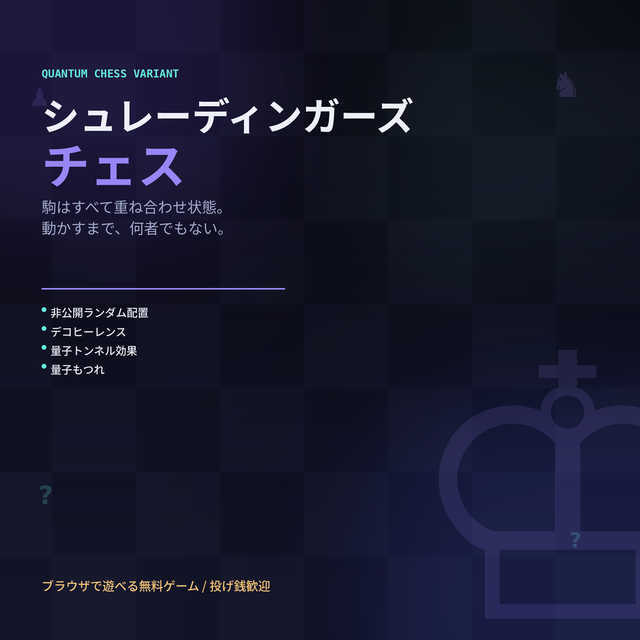
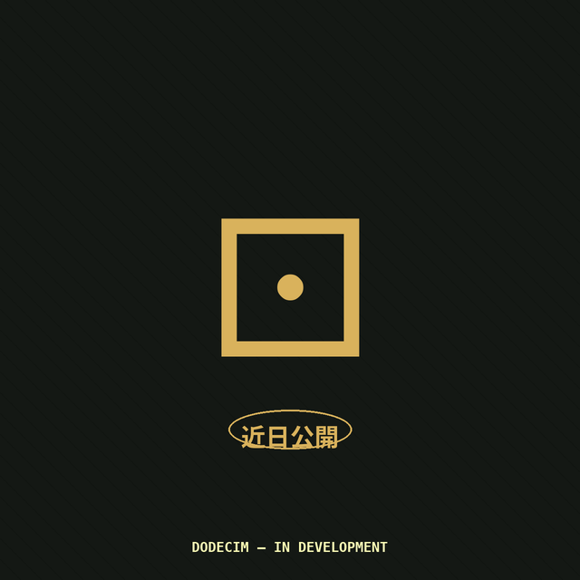
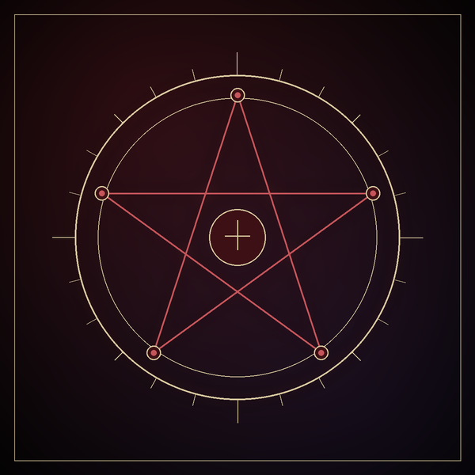
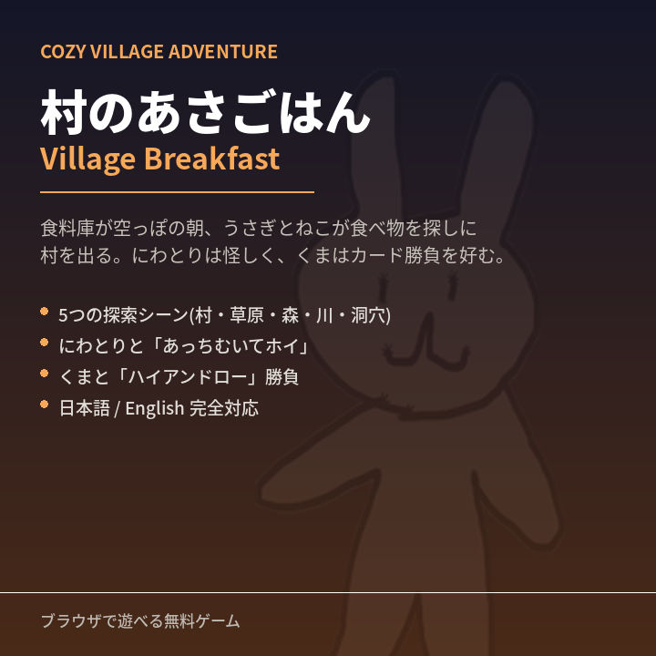

2026-07
シュレーディンガーズチェス
Schrödinger's Chess
駒はすべて「？」から始まる、量子力学モチーフの変則チェス。配置はランダム、
正体は動かすまでわからない。デコヒーレンス、トンネル効果、量子もつれが
盤面を絶えず揺さぶる。
A quantum-mechanics-flavored chess variant where every piece starts as a "?".
Setup is random and identities stay hidden until you move them. Decoherence,
tunneling, and entanglement keep shaking up the board.
ブラウザで遊ぶ
Play in Browser

開発中
In Development
DODECIM(十二紋章戦)
DODECIM (Twelve-Sigil War)
レーン制のカードバトル。4つの紋章カテゴリと十二面ダイスが趨勢を決める、
均整のとれたファンタジー対戦ゲーム。
A lane-based card battler. Four sigil categories and a twelve-sided die
decide the tide of battle, in a balanced fantasy duel.
詳細を見る
View Details

リリース準備中
Preparing for Release
Blood Sigil(五つの魂)
Blood Sigil: Five Spirits
勝てば刻印、負ければ能力が覚醒する。5体の非対称なAIと対峙する、
ダークファンタジーのカード対戦。日英両対応。
Win, and you're marked with a Blood Sigil. Lose, and a dormant power
awakens. A dark fantasy card duel against five asymmetric AI opponents.
Japanese and English supported.
詳細を見る
View Details

2026-07
村のあさごはん
Village Breakfast
食料庫が空っぽの朝、うさぎとねこが食べ物を探しに村を出る、
ゆるくて温かい探索アドベンチャー。にわとりとの「あっちむいてホイ」、
くまとの「ハイアンドロー」勝負など、ちょっとしたミニゲームも。
A gentle exploration adventure — Rabbit and Cat search for breakfast
after the village storehouse turns up empty. Along the way: a game of
"Guess the Direction" with the chicken, and a High-Low card duel with the bear.
ブラウザで遊ぶ
Play in Browser